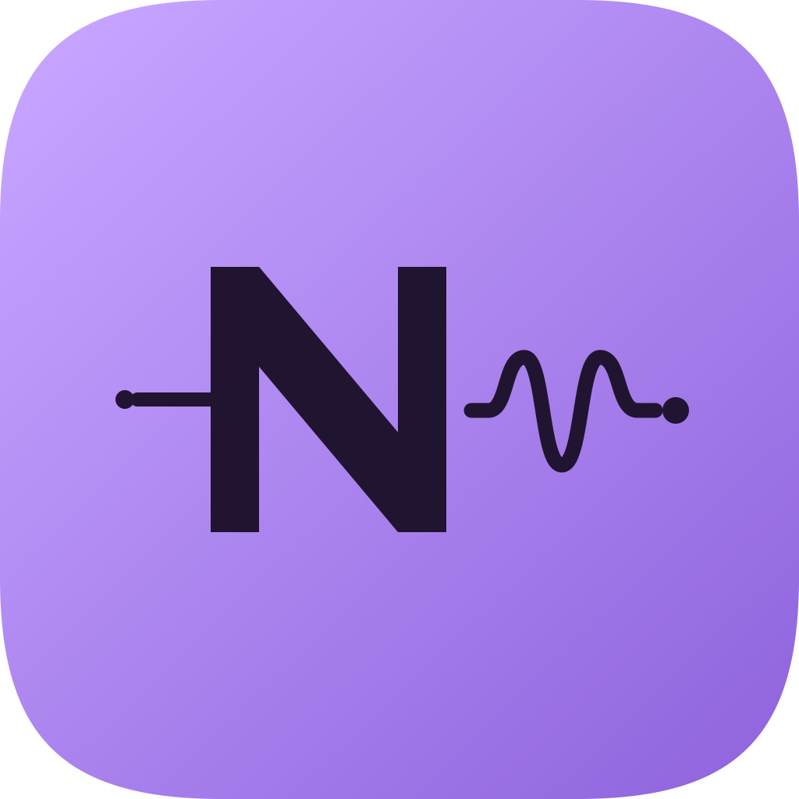
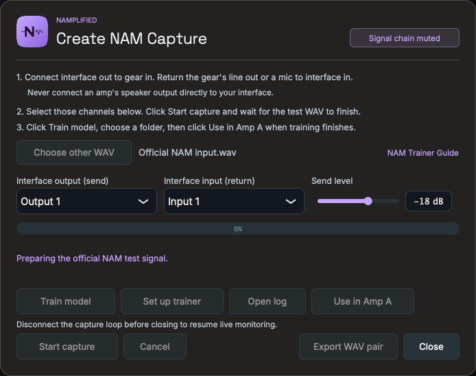

Capture your own gear
Send the official NAM test signal through your amp or pedal. Record the return, train the model locally, and load the resulting .nam in Amp A.

NAMplifiedIn development
Capture your own amp or pedal. Give each amp its own effects. Record a loop that ends exactly on the bar.
See what's new
Send the official NAM test signal through your amp or pedal. Record the return, train the model locally, and load the resulting .nam in Amp A.
Place effects before the split, on either amp path, or after the mix. Blend the two amps in stereo or put one on each side.
Record freehand or choose 1, 2, or 4 bars. Set a tempo or sync to your DAW, with an optional count-in.
Export the dry guitar take from Amp & IR Comparison as a WAV to keep working with it in your DAW.
Use separate volume controls for Rig A and Rig B to match their levels while you listen to the same take.
Find presets in the center of the toolbar. Larger blocks and a clear selection highlight make the active part of the chain easier to spot.